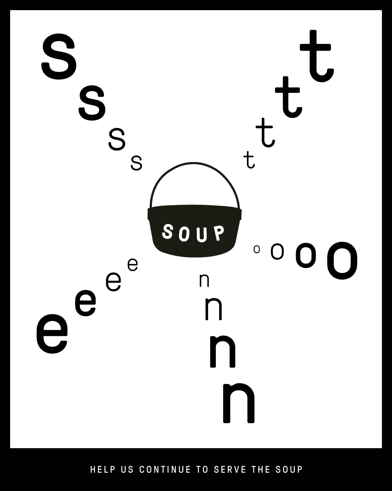
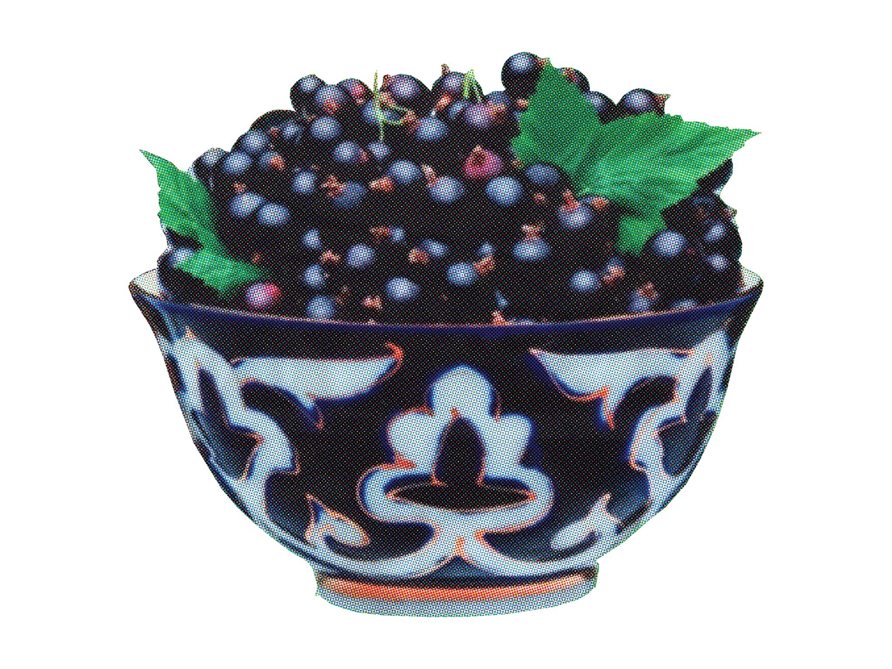

Stone Soup

This not-for-profit, grassroots publication highlights often-ignored issues in food around Aotearoa New Zealand, as well as highlighting people trying to do things in a better way, or to address these issues.
I strongly associate with the goals and philosophy behind Stone Soup, and I attempt to collaborate with them and their broader network of activists whenever I can. Not only in terms of publishing articles, but supportiung other food- and community-focused projects, too.

Fill a Basket
Stone Soup
It is a relatively remote alpine region, cut off from other areas by snow for much of the year. Its climate is extreme, harsh under both winter snow and penetrating summer sun. It’s also jaw-droppingly beautiful. And it’s the setting for our sweet and sour story.